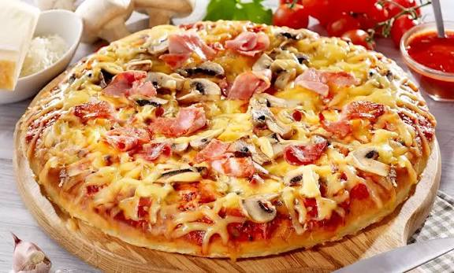

Neapolitan Pizza

Description
Neapolitan pizza is a legendary Italian masterpiece known for its simple yet incredibly vibrant flavors.
Characterized by a soft, pillowy, and slightly charred crust, this traditional dish relies on high-quality,
minimal ingredients to create an exceptional culinary experience. Originating in Naples, it has become a global
symbol of comfort food and fine artisanal baking.
The magic of a true Margherita pizza lies in the perfect balance of fresh ingredients that represent the colors
of the Italian flag: red tomatoes, white mozzarella, and green basil. Baked rapidly at high temperatures, the
cheese melts beautifully into the sweet tomato sauce, while a drizzle of olive oil brings all the savory,
aromatic elements together.
Ingredients
- Pizza dough (flour, water, yeast, and salt)
- San Marzano crushed tomatoes
- Fresh mozzarella cheese (Fior di Latte or Buffalo Mozzarella)
- Fresh basil leaves
- Extra virgin olive oil
- Salt
Steps
- Preheat the oven — Turn on your oven to its maximum temperature, ideally using a baking
stone or steel if available.
- Shape the dough — Gently stretch the pizza dough on a floured surface into a circle,
leaving the edges slightly thicker to form the crust (cornicione).
- Spread the sauce — Ladle a thin layer of crushed San Marzano tomatoes over the center of
the dough, leaving the edges bare.
- Add the toppings — Distribute pieces of fresh mozzarella evenly across the tomato sauce and
add a few fresh basil leaves.
- Drizzle with oil — Finish the assembly with a light drizzle of high-quality extra virgin
olive oil and a pinch of salt.
- Bake the pizza — Transfer the pizza to the hot oven and bake until the crust is puffed and
charred in spots, and the cheese is fully melted.
- Slice and enjoy — Garnish with a few more fresh basil leaves, let it cool for a minute,
then slice and serve hot.
Home